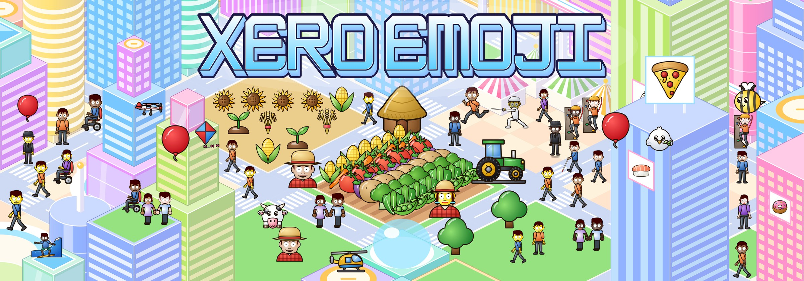
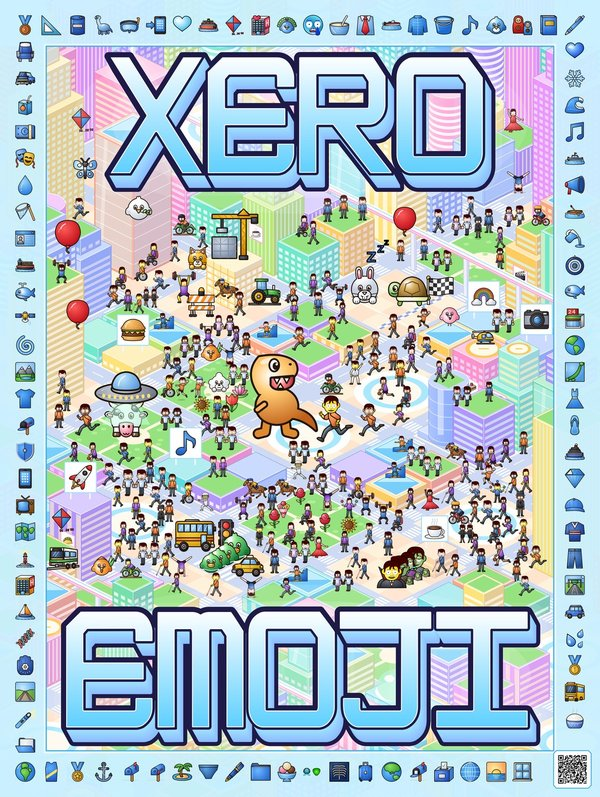
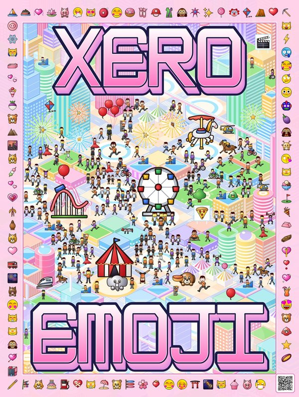
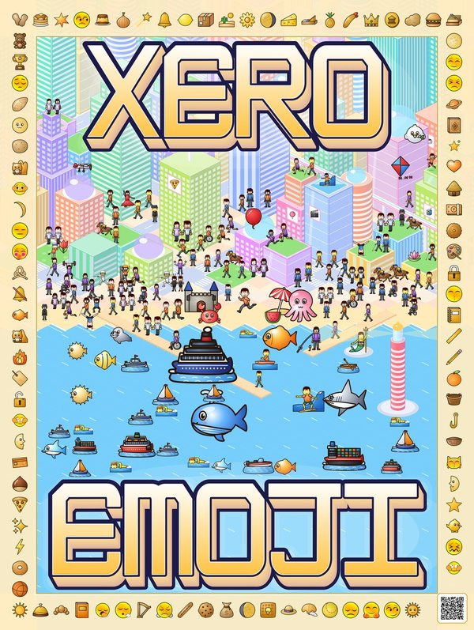

Xero Emoji
Xero Emoji
Xero Emoji
A complete emoji set in the Xerographer house style: every one of the 3,963 fully-qualified emoji of Unicode Emoji 18.0, each as an SVG and a 512×512 PNG, with all skin tones and ZWJ sequences. Started in 2016 by Max Infeld; first previewed publicly as "Xeromoji" on Steemit on World Emoji Day 2017.
Gallery →
Search all 3,963 by name, emoji or codepoint; download SVG/PNG. Chat demo →
Plain-text messages rendered with the tiny
Drop-in, dependency-free
Every emoji with tone variants, in all six tones.
Search all 3,963 by name, emoji or codepoint; download SVG/PNG. Chat demo →
Plain-text messages rendered with the tiny
xero-emoji.js replacer.
Emoji picker →Drop-in, dependency-free
xero-emoji-picker.js widget.
Skin tones →Every emoji with tone variants, in all six tones.
Use it on any page (2 lines)
<script src="https://maximusmaximus.github.io/xeroemoji/demos/xero-emoji.js"></script>
<script>XeroEmoji.load({ base: 'https://maximusmaximus.github.io/xeroemoji/' }).then(X => X.parse(document.body));</script>
Rendered with that replacer: Hello 👋🏽 from Xero Emoji ✨ 🍕 🚀 🐙 🌈 🇧🇷 🧑🏿🎨
Quality: every emoji is scored by the bundled xeroqc checker against the house requirements; latest run 3,386 PASS · 577 PASS with known exceptions · 0 FAIL.
Example posters


Day City →
Full vector SVG


Carnival →
Full vector SVG


Harbour →
Full vector SVG
Print PDFs on IPFS: Day City · Carnival · Harbour · Tooling: MCP server · npm & Python packages · release